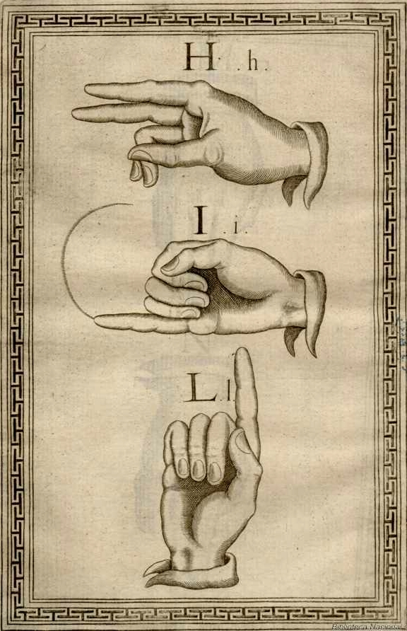
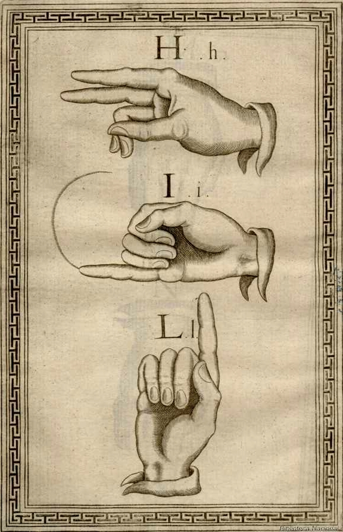
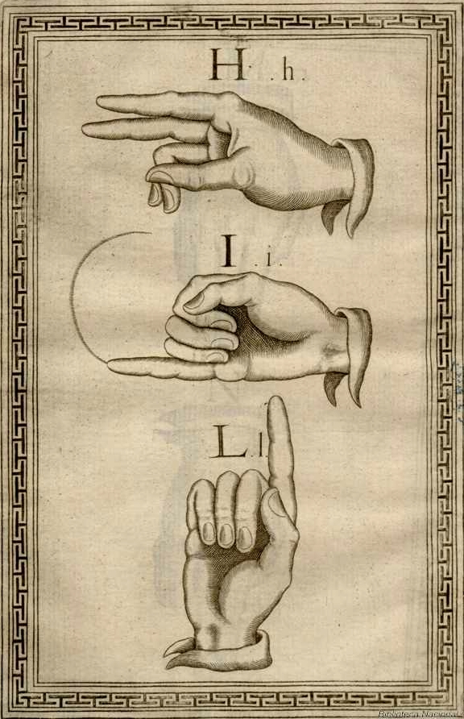

Tomado de https://upload.wikimedia.org/wikipedia/commons/thumb/4/4e/Main_Sign_Language_Families.png/500px-Main_Sign_Language_Families.png
Las lenguas de señas modernas, al igual que las lenguas orales, están sujetas al proceso universal de cambio lingüístico, que hace que evolucionen con el tiempo y eventualmente, una misma lengua puede evolucionar en lugares diferentes hacia variedades diferentes. De hecho, muchas de las lenguas modernas de señas pueden ser clasificadas en familias:
originadas en la antigua lengua de señas de Kent, usada durante el siglo XVII, que dio lugar a la lengua de señas usada en Martha's Vineyard (Massachusetts), que influyó de manera importante en la lengua de señas americana (ASL).
Lenguas originadas en la antigua lengua de señas francesa. Estas lenguas se remontan a las formas estandarizadas de las lenguas de señas usadas en España, Italia y Francia desde el siglo XVIII en la educación de los sordos. En concreto, la antigua lengua de señas francesa se desarrolló en el área de París, gracias a los esfuerzos del abad Charles Michel de l'Épée en su escuela de sordos. En tiempos modernos esta lengua ha dado lugar a otras varias, como la lengua de señas americana (ASL), la lengua de señas mexicana (LSM), la moderna lengua de señas francesa (LSF), la lengua de señas italiana (LIS), la lengua de señas de Irlanda (IRSL) y las lenguas de señas ibéricas (que muestran similitudes con la antigua lengua de señas francesa, pues no en vano los educadores españoles de sordos del siglo XIX se formaron en el Instituto Nacional de Sordomudos de París), derivándose, esta, a dos lenguas diferentes con cierta inteligibilidad mutua: La lengua de señas española (LSE), la lengua de señas catalana (LSC).
Lenguas originadas en la lengua de señas británica (BSL), que se diversificó durante el siglo XIX dando lugar a la lengua de señas australiana (Auslan), la lengua de señas de Nueva Zelanda (NZSL) y la lengua de señas de Irlanda del Norte (NIRSL).
Lenguas originadas en la lengua de señas alemana (DGS), se considera que está relacionada con la lengua de señas de la Suiza alemana (DSGS), la lengua de señas austríaca (ÖGS) y probablemente la lengua de señas israelí (ISL).
Lingüistica

Tomado de https://es.wikipedia.org/wiki/Lengua_de_se%C3%B1as
El estudio científico de las lenguas de señas, ha revelado que poseen todas las propiedades y complejidades propias de cualquier lengua natural oral. A pesar de la generalizada y errónea concepción de que son "lenguas artificiales". En concreto, se han encontrado los siguientes hechos relativos a las lenguas de señas que proporcionan los lingüistas necesarios para clasificarlas como lenguas naturales:
Poseen una fonología abstracta, llamada en este caso querología, analizable en términos formales en rasgos de posición, orientación y configuración, en un modo análogo a como son analizados los fonemas de las lenguas orales. Además la realización de cada signo está sujeto al mismo tipo de variedad que los sonidos de las lenguas orales (variación dialectal,asimilación, cambio lingüístico).
Poseen una sintaxis que obedece los mismos principios generales que las otras lenguas naturales, y tienen algunos mecanismos de formación de palabra productivos que permiten afirmar la existencia de procesos morfológicos.
La adquisición de una lengua de señas por parte de bebés (sordos u oyentes) sigue un proceso paralelo a la adquisición de una lengua oral por parte de un niño oyente.
Existen comunidades estables de hablantes, cuya lengua presenta tanto variaciones dialectales, como modismos propios de cada comunidad. Estos están sujeto al mismo tipo de cambio lingüístico universalmente detectado en todas las lenguas naturales (las lenguas artificiales carecen de estas características).
Las lenguas de señas, al igual que las orales, se organizan por unidades elementales sin significado propio (lexemas).
Históricamente, el primero en analizar las lenguas de señas en términos lingüísticos fue el jesuita español, padre de la Lingüística Comparada, Abate Lorenzo Hervás y Panduro (1735-1809). En su obra, editada en Madrid en 1795, Escuela Española de Sordomudos o Arte para enseñarles a escribir y hablar el idioma español, es decir, dos siglos antes de que William C. Stokoe hiciera lo propio con la Lengua de Señas Estadounidense (ASL). Algunos países reconocen en su legislación la lengua de señas como lengua nacional (México. Ley General para la Inclusión de las Persona con Discapacidad. Art. 14, Colombia Ley 324 del 11 de octubre de 1996. Uruguay. Ley N.º 17.378 , 2001).
Las lenguas de señas no son simple mímica, ni tampoco una reproducción visual de alguna versión simplificada de ninguna lengua oral. Tienen gramática compleja, creativa y productiva como la de cualquier otra lengua natural. Una prueba más de la diferencia entre las lenguas orales y las lenguas de señas es el hecho de que estas últimas explotan únicamente los disparos del medio visual. La lengua oral es auditiva y, consecuentemente, lineal. Solo se puede emitir o recibir un sonido a la vez, mientras que la lengua de señas es visual y, por lo tanto, se puede referir un espacio entero al mismo tiempo. En consecuencia, la información puede fluir mediante varios "canales" y expresarse simultáneamente.
Otra característica que ha significado una diferenciación entre la lengua de señas y las lenguas orales es la dificultad de ser escrita; pues se trata de una lengua tradicionalmente ágrafa, ya que, normalmente, las lenguas de señas no se han escrito. Entre otros motivos ha contribuido, a que la mayoría de las personas sordas lean y escriban en la lengua oral de su país. Pese a esto, ha habido propuestas para desarrollar sistemas de transcripción de las lenguas de señas, provenientes sobre todo del mundo académico, pero la mayoría de ellas, tiene deficiencias para captar todas las características comunicativas que se utilizan en las lenguas de señas (especialmente los elementos no-manuales y posicionales). Sin embargo, existen varios sistemas de representación de las señas mediante signos textuales (glosas, signo-escritura alfabética.) O bien, icónicos (HamNoSys, Sign Writing). Este último sistema -creado por Valerie Sutton alrededor de 1974 permite la escritura de todas las lenguas de señas del mundo de una forma bastante sencilla de aprender, además de ser, quizás, el más completo y flexible, pues ya se utiliza en varios países e idiomas con buenos resultados. Por tal motivo permite describir de forma bastante precisa -aunque no perfecta-, los elementos no manuales y posicionales, dotando a las personas sordas de la posibilidad de acceder a diccionarios, libros, diarios o revistas con sus contenidos expresados en la correspondiente lengua de señas, con lo cual estas reciben la posibilidad de ser lenguas escritas.


 
